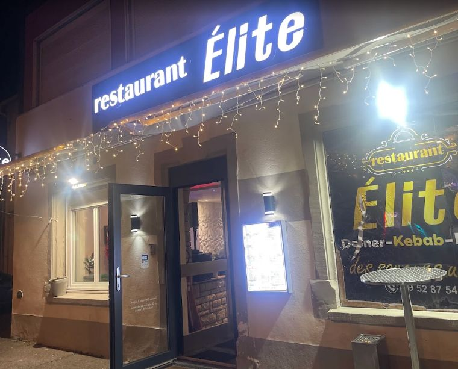
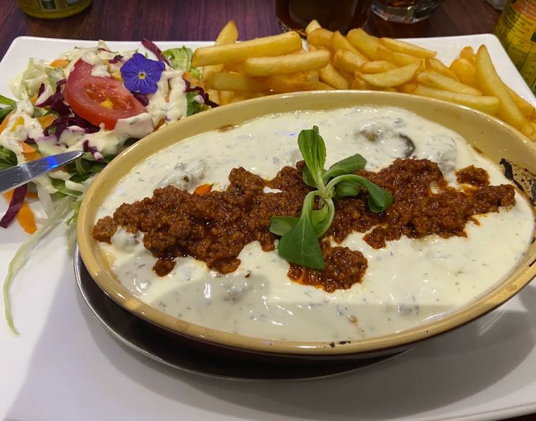
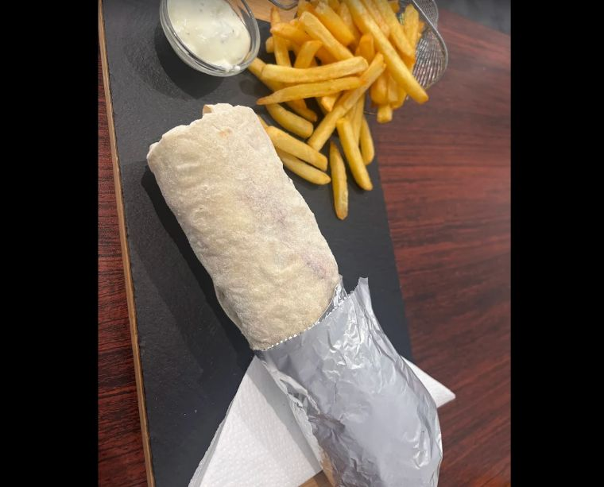
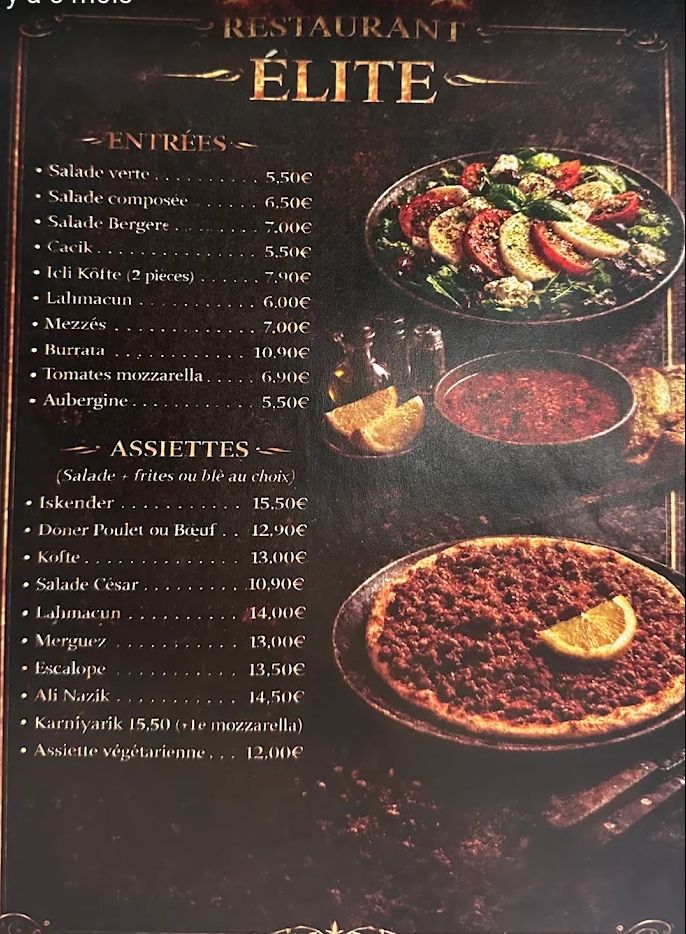
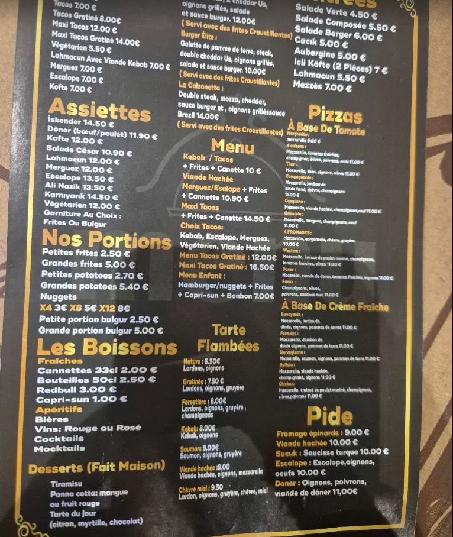

{{ c.n }}
{{ c.t }}
{{ c.x }}
{{ t.kick }}
{{ t.tag }}
{{ t.homeLead1 }}
{{ t.homeLead2 }}
119 route de Colmar · Ingersheim · {{ t.meta2 }}

{{ t.trioL }}
{{ c.n }}
{{ c.x }}
{{ t.galL }}
4,6 / 5 · 132 {{ t.revU }}



{{ t.galNote }}
{{ q.q }}
{{ t.revNote }}
{{ t.revLink }} ↗{{ t.manifL }}
{{ t.manifP1 }}
{{ t.manifP2 }}
{{ t.manifP3 }}
{{ t.manifQ }}
{{ t.infoL }}
{{ t.d1 }}
11:30 – 14:30 · 18:00 – 23:00
{{ t.d2 }} — {{ t.closed }}
{{ t.menuNote }}
{{ t.menuLead1 }}
{{ t.menuLead2 }}
{{ t.howL }}
{{ s.n }}
{{ s.x }}
{{ g.note }}
{{ t.boardL }}

{{ t.lexL }}
{{ t.lexNote }}
{{ t.storyL }}
{{ leadCap }}{{ leadRest }}
{{ t.storyP2 }}
{{ t.storyQuote }}
{{ t.storyP3 }}
{{ t.practL }}
{{ p.v }}
{{ c.n }}
{{ c.x }}
{{ t.seoP1 }}
{{ t.seoP2 }}
{{ t.seoP3 }}
{{ t.zoneNote }}
{{ f.a }}
{{ t.d1 }}
11:30 – 14:30 · 18:00 – 23:00
{{ t.d2 }} — {{ t.closed }}
{{ t.cTitle }}
{{ t.cDemo }}